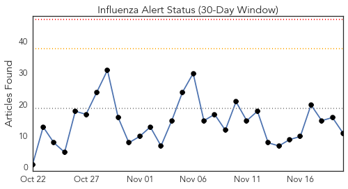
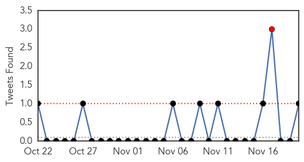
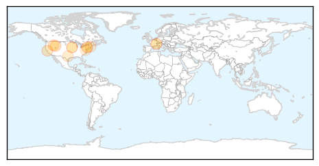
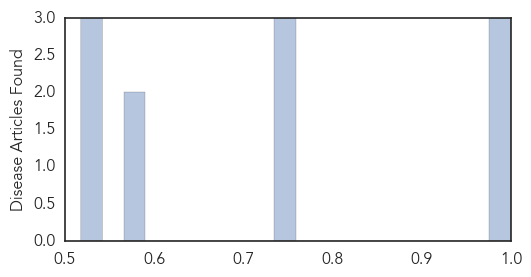

Toggle navigation
Early Warning
Daily Alerts
Influenza
Nov 20, 2015
Compare to:
-
Dengue Fever
Hemmorhagic Fever
Mold/Fungal Infection
Meningitis
Pertussis / Whooping Cough
Middle East Respiratory Syndrome
Cholera
Hepatitis
Chikungunya
Yellow Fever
Bubonic Plague
West Nile Virus
Swine Flu
Ebola
Measles
Unknown
Mumps
30 Day Trends
Web: 0
alerts
, 0
warnings
Twitter: 1
alerts
, 0
warnings
Top Articles:
1.000
Tama County, State Public Health warn of flu dangers - TamaToledoNews.com
0.993
Flu shots advised, but effect is varied
0.983
WHO holds global influenza vaccine conference
0.751
November 20, 2015 Archives
0.751
November 19, 2015 Archives
0.751
November 19, 2015 Archives
0.572
Uber delivers flu shots in 36 cities, in one-day experiment
0.572
Uber delivers flu shots in 36 cities, in one-day experiment
0.528
Final flu clinics wrapping up next week
0.523
Johnson & Johnson
0.518
Health Department holds children flu shot clinic
Top Tweets:
0.895
.@DLHDara Was it a lab confirmed case of flu? Lots of ILIs - influenza-like illnesses - go around in flu season.
Web/News Articles

Tweets

Article Locations

Article Confidences
